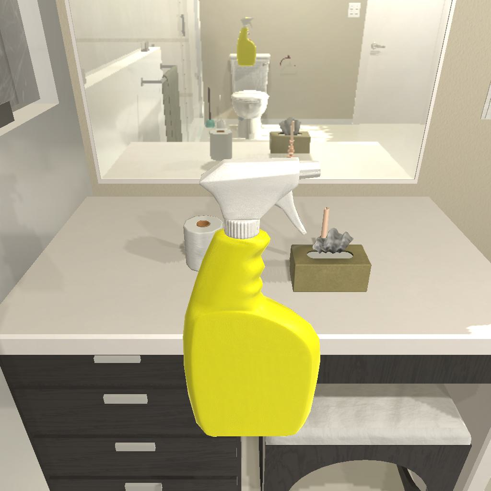
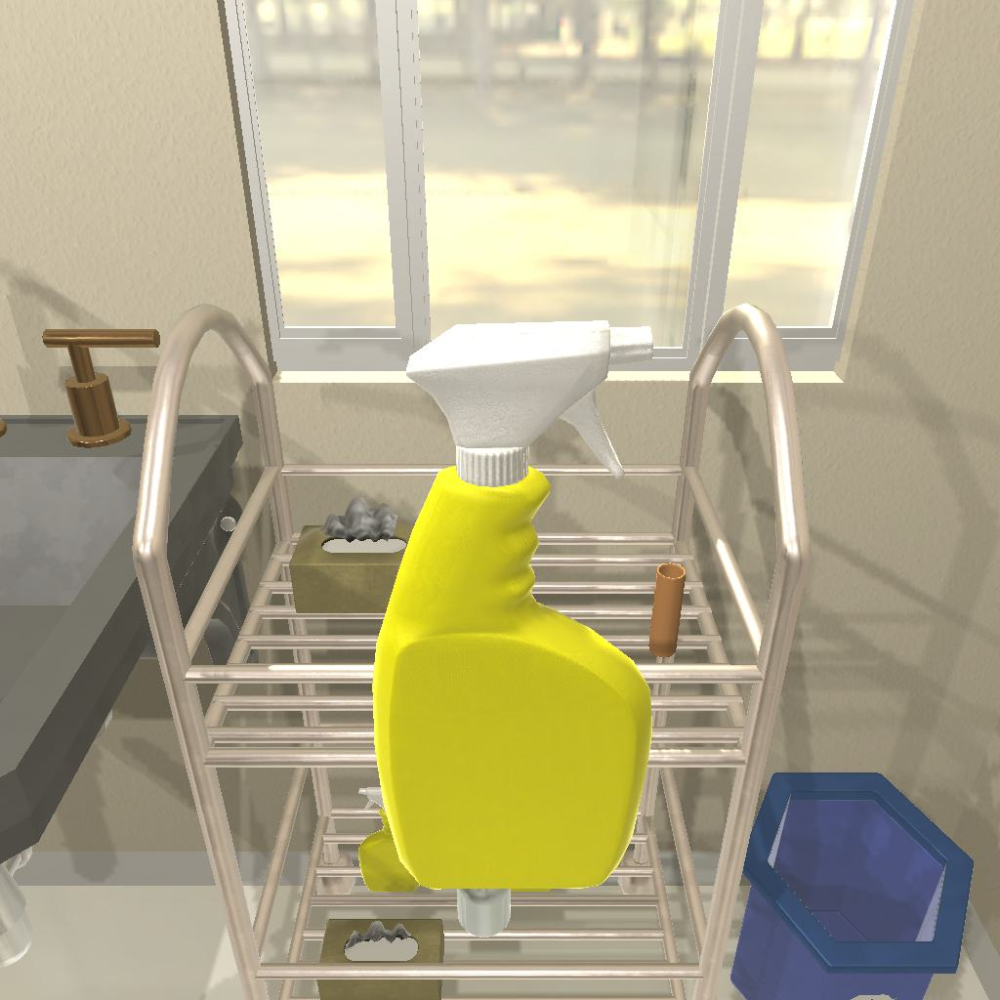

---------------------------------------------------------task: 28---------------------------------------------------------
--------------------------------------------------------------------------------------------------------------------------------------------------------------------
--------------------------------------------------------------------------------------------------------------------------------------------------------------------
Step:--------------------------------------------------------------------------7-------------------------------------------------------------------------------
----------------------------------------
VLM Prompt:
Image1:
Image2:
**Instruction**
1. Analyze the provided images to identify all visible household objects and compare the difference between images (e.h. whether the object is opened or not and taken on hand or not), focusing on those relevant to the task description "put two spraybottle in toilet."
2. Use the analysis of images and the task hint "The agent must find an object of the desired type, pick it up, find the correct location to place it, put it down there, then look for another object of the desired type, pick it up, return to previous location, and put it down there with the other object." to answer the question: what is the most reasonable action in the choices for the task description "put two spraybottle in toilet"?
3. Decide and write the answer using the template: The answer is: (i): , where i is the real number. If there is no desired object in images, search every place based on **Initial Observation** to find the object. And if no one is exactly correct, choose a similar answer.
**Initial Observation**
You are in the middle of a room. Looking quickly around you, you can see bathtub (1), bathtubbasin (1), cart (1), sink (1), garbagecan (1), sinkbasin (1), countertop (1), drawer (1-4), toilet (1), toiletpaperhanger (1)
**Answer Choices**
(1): go to bathtub 1
(2): go to bathtubbasin 1
(3): go to sink 1
(4): go to garbagecan 1
(5): go to sinkbasin 1
(6): go to countertop 1
(7): go to drawer 1
(8): go to drawer 2
(9): go to drawer 3
(10): go to drawer 4
(11): go to toilet 1
(12): go to toiletpaperhanger 1
(13): put spraybottle 1 in/on cart 1
(14): examine spraybottle 1
(15): examine cart 1
**Answer**
Let's think step by step by following the instructions.
----------------------------------------
----------------------------------------
Original Response:
First, we need to identify the visible household objects in the images. In Image 1, we can see a spray bottle, toilet paper roll, candle, and other small objects on the countertop. In Image 2, we see a similar spray bottle, a candle, and a blue container on a cart near a window and sink. There is no visible difference in the state of the objects between the images (e.g., opened or not).
The task description is "put two spraybottle in toilet." According to the task hint, the agent must find a spray bottle, pick it up, find the toilet, and put it down there. Then, the agent must look for another spray bottle, pick it up, return to the toilet, and put it down with the other bottle.
Considering the initial observation, the agent is in the middle of a room with a list of objects and furniture. Since we need to put two spray bottles in the toilet, we should first go to the location where the spray bottles are visible, which is the countertop and the cart.
From the answer choices, the most reasonable actions would be to:
- Go to the countertop (6) to pick up the first spray bottle seen in Image 1.
- Go to the toilet (11) to put the first spray bottle down.
- Next, go to the cart (13) to pick up the second spray bottle seen in Image 2.
- Go back to the toilet (11) to put the second spray bottle down with the first one.
However, since we can only select one action, we should choose the first step towards completing the task. Since the countertop is where we first see a spray bottle, the answer would be:
The answer is: (6): go to countertop 1.
----------------------------------------
----------------------------------------
>>> Refine Original VLM Response and Get Pure Action: go to countertop 1
----------------------------------------
-----------------------------------------------------------------
Running time: 26.241265058517456 seconds
Total Money: 14.560670000000004
-----------------------------------------------------------------
-----------------------------------------------------------------
Text Observation:You arrive at loc 6. On the countertop 1, you see a tissuebox 1, a toiletpaper 1, a handtowel 1, and a candle 1.
-----------------------------------------------------------------
UNSUCCEED